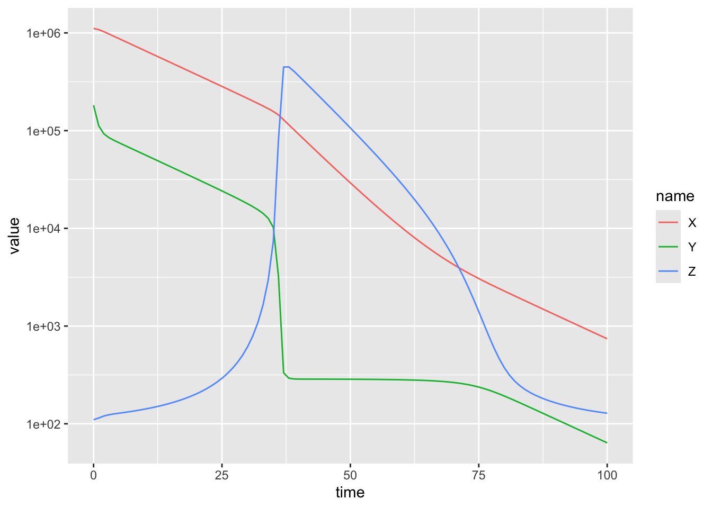
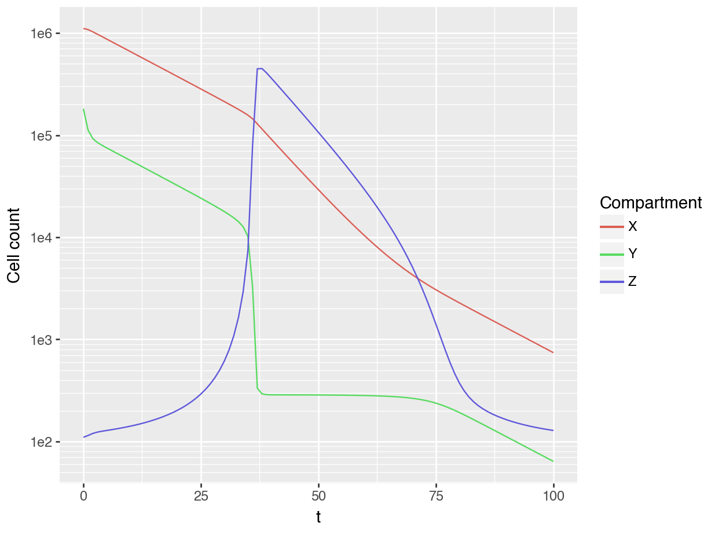
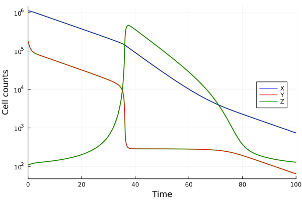

library('tidyverse')
library('reticulate')
use_condaenv('sbloggel')
library('JuliaCall')
julia_setup(JULIA_HOME = '/Users/seb/.juliaup/bin/')
set.seed(1)ODE benchmark: R, Python and Julia
R
R
library('microbenchmark')
library('deSolve')
library('tidyverse')
p <- list(Pz = 34451,
Kz = 2274,
Pxy = 0.118,
Pyx = 0.721,
TKI = 0.742,
Py = 0.05,
Ky = 1e6,
m = 1e-4,
rz = 200,
a = 2,
b = 0,
e = 2,
d = 1,
X0 = 1110861,
Y0 = 181818,
Z0 = 110)
deriv <- function(time, state, parameters) {
with(as.list(c(state, parameters)), {
dX <- Pyx * Y - Pxy * X
dY <- Pxy * X - Pyx * Y + Py * (1 - Y / Ky) * Y - m * Z * Y - d * TKI * Y
dZ <- rz + Z * Pz * (Y / (Kz ^ 2 + Y ^ 2)) - a * Z
return(list(c(dX, dY, dZ)))
})
}
sim_cml <- function() {
ode(y = c(X = p$X0, Y = p$Y0, Z = p$Z0),
times = seq(0, 100),
func = deriv,
parms = p)
}
microbenchmark(sim_cml())Warning in microbenchmark(sim_cml()): less accurate nanosecond times to avoid
potential integer overflowsUnit: milliseconds
expr min lq mean median uq max neval
sim_cml() 7.43535 7.783214 8.529941 7.926489 8.405492 20.33387 100sim_result <- sim_cml()
sim_result |>
unclass() |>
as_tibble() |>
pivot_longer(cols = -time) |>
ggplot(aes(time, value, color = name)) +
geom_line() +
scale_y_continuous(trans = 'log10')
Python
import numpy as np
import matplotlib.pyplot as plt
from scipy.integrate import odeint
import pandas as pd
import plotnine as p9
import timeit
p = (34451, 2274, 0.118, 0.721, 0.742, 0.05, 1e6, 1e-4, 200, 2, 0, 2, 1)
y0 = (1110861, 181818, 110)
t = np.linspace(0, 100, 101)
def deriv(y, t, *params):
X, Y, Z = y
Pz, Kz, Pxy, Pyx, TKI, Py, Ky, m, rz, a, b, e, d = params
dX = Pyx * Y - Pxy * X
dY = Pxy * X - Pyx * Y + Py * (1 - Y / Ky) * Y - m * Z * Y - d * TKI * Y
dZ = rz + Z * Pz * (Y / (Kz ** 2 + Y ** 2)) - a * Z
return dX, dY, dZ
def sim_cml():
return odeint(deriv, y0, t, args=p)
x = timeit.repeat('sim_cml()', repeat=100, number=1, globals=globals())
print('Mean:', np.mean(x) * 1000, 'ms\nMin: ', np.min(x) * 1000, 'ms\nMax: ', np.max(x) * 1000, 'ms')Mean: 4.1981229196244385 ms
Min: 4.056500001752283 ms
Max: 5.0466249958844855 mssol = sim_cml()
df = pd.DataFrame(sol, columns = ['X', 'Y', 'Z'])
df['t'] = t
df_long = pd.melt(df,
id_vars = ['t'],
value_vars = ['X', 'Y', 'Z'],
value_name = 'cell_count')
(
p9.ggplot(df_long, p9.aes('t', 'cell_count', colour='variable')) +
p9.geom_line() +
p9.scale_y_continuous(trans='log10') +
p9.labs(y='Cell count', color = 'Compartment')
)<string>:3: FutureWarning: Using repr(plot) to draw and show the plot figure is deprecated and will be removed in a future version. Use plot.show().
<Figure Size: (640 x 480)>
Julia
using DifferentialEquations
using Plots
using BenchmarkTools
function cml_model!(du, u, p, t)
X, Y, Z = u
Pz, Kz, Pxy, Pyx, TKI, Py, Ky, m, rz, a, b, e, d = p
du[1] = Pyx * Y - Pxy * X
du[2] = Pxy * X - Pyx * Y + Py * (1 - Y / Ky) * Y - m * Z * Y - d * TKI * Y
du[3] = rz + Z * Pz * (Y / (Kz^2 + Y^2)) - a * Z
endcml_model! (generic function with 1 method)
p = [34451, 2274, 0.118, 0.721, 0.742, 0.05, 1e6, 1e-4, 200, 2, 0, 2, 1];
u_0 = [1110861, 181818, 110];
tspan = (0.0, 100.0);
prob = ODEProblem(cml_model!, u_0, tspan, p);
@benchmark solve(prob, Tsit5()) samples=100;
sol = solve(prob, Tsit5());
plot(sol, xlabel="Time", ylabel="Cell counts", legend=:right, lw=2, yscale=:log10, primary=false);
plot!(sol.t, sol[1,:], label="X", color=:blue);
plot!(sol.t, sol[2,:], label="Y", color=:red);
plot!(sol.t, sol[3,:], label="Z", color=:green)
Accessing Python and Julia results from R
julia_eval('sol')Julia Object of type ODESolution{Float64, 2, Vector{Vector{Float64}}, Nothing, Nothing, Vector{Float64}, Vector{Vector{Vector{Float64}}}, Nothing, ODEProblem{Vector{Float64}, Tuple{Float64, Float64}, true, Vector{Float64}, ODEFunction{true, SciMLBase.AutoSpecialize, FunctionWrappersWrappers.FunctionWrappersWrapper{Tuple{FunctionWrappers.FunctionWrapper{Nothing, Tuple{Vector{Float64}, Vector{Float64}, Vector{Float64}, Float64}}, FunctionWrappers.FunctionWrapper{Nothing, Tuple{Vector{ForwardDiff.Dual{ForwardDiff.Tag{DiffEqBase.OrdinaryDiffEqTag, Float64}, Float64, 1}}, Vector{ForwardDiff.Dual{ForwardDiff.Tag{DiffEqBase.OrdinaryDiffEqTag, Float64}, Float64, 1}}, Vector{Float64}, Float64}}, FunctionWrappers.FunctionWrapper{Nothing, Tuple{Vector{ForwardDiff.Dual{ForwardDiff.Tag{DiffEqBase.OrdinaryDiffEqTag, Float64}, Float64, 1}}, Vector{Float64}, Vector{Float64}, ForwardDiff.Dual{ForwardDiff.Tag{DiffEqBase.OrdinaryDiffEqTag, Float64}, Float64, 1}}}, FunctionWrappers.FunctionWrapper{Nothing, Tuple{Vector{ForwardDiff.Dual{ForwardDiff.Tag{DiffEqBase.OrdinaryDiffEqTag, Float64}, Float64, 1}}, Vector{ForwardDiff.Dual{ForwardDiff.Tag{DiffEqBase.OrdinaryDiffEqTag, Float64}, Float64, 1}}, Vector{Float64}, ForwardDiff.Dual{ForwardDiff.Tag{DiffEqBase.OrdinaryDiffEqTag, Float64}, Float64, 1}}}}, false}, UniformScaling{Bool}, Nothing, Nothing, Nothing, Nothing, Nothing, Nothing, Nothing, Nothing, Nothing, Nothing, Nothing, typeof(SciMLBase.DEFAULT_OBSERVED), Nothing, Nothing, Nothing, Nothing}, Base.Pairs{Symbol, Union{}, Tuple{}, @NamedTuple{}}, SciMLBase.StandardODEProblem}, Tsit5{typeof(OrdinaryDiffEqCore.trivial_limiter!), typeof(OrdinaryDiffEqCore.trivial_limiter!), Static.False}, OrdinaryDiffEqCore.InterpolationData{ODEFunction{true, SciMLBase.AutoSpecialize, FunctionWrappersWrappers.FunctionWrappersWrapper{Tuple{FunctionWrappers.FunctionWrapper{Nothing, Tuple{Vector{Float64}, Vector{Float64}, Vector{Float64}, Float64}}, FunctionWrappers.FunctionWrapper{Nothing, Tuple{Vector{ForwardDiff.Dual{ForwardDiff.Tag{DiffEqBase.OrdinaryDiffEqTag, Float64}, Float64, 1}}, Vector{ForwardDiff.Dual{ForwardDiff.Tag{DiffEqBase.OrdinaryDiffEqTag, Float64}, Float64, 1}}, Vector{Float64}, Float64}}, FunctionWrappers.FunctionWrapper{Nothing, Tuple{Vector{ForwardDiff.Dual{ForwardDiff.Tag{DiffEqBase.OrdinaryDiffEqTag, Float64}, Float64, 1}}, Vector{Float64}, Vector{Float64}, ForwardDiff.Dual{ForwardDiff.Tag{DiffEqBase.OrdinaryDiffEqTag, Float64}, Float64, 1}}}, FunctionWrappers.FunctionWrapper{Nothing, Tuple{Vector{ForwardDiff.Dual{ForwardDiff.Tag{DiffEqBase.OrdinaryDiffEqTag, Float64}, Float64, 1}}, Vector{ForwardDiff.Dual{ForwardDiff.Tag{DiffEqBase.OrdinaryDiffEqTag, Float64}, Float64, 1}}, Vector{Float64}, ForwardDiff.Dual{ForwardDiff.Tag{DiffEqBase.OrdinaryDiffEqTag, Float64}, Float64, 1}}}}, false}, UniformScaling{Bool}, Nothing, Nothing, Nothing, Nothing, Nothing, Nothing, Nothing, Nothing, Nothing, Nothing, Nothing, typeof(SciMLBase.DEFAULT_OBSERVED), Nothing, Nothing, Nothing, Nothing}, Vector{Vector{Float64}}, Vector{Float64}, Vector{Vector{Vector{Float64}}}, Nothing, OrdinaryDiffEqTsit5.Tsit5Cache{Vector{Float64}, Vector{Float64}, Vector{Float64}, typeof(OrdinaryDiffEqCore.trivial_limiter!), typeof(OrdinaryDiffEqCore.trivial_limiter!), Static.False}, Nothing}, SciMLBase.DEStats, Nothing, Nothing, Nothing, Nothing}.
ODESolution{Float64, 2, Vector{Vector{Float64}}, Nothing, Nothing, Vector{Float64}, Vector{Vector{Vector{Float64}}}, Nothing, ODEProblem{Vector{Float64}, Tuple{Float64, Float64}, true, Vector{Float64}, ODEFunction{true, SciMLBase.AutoSpecialize, FunctionWrappersWrappers.FunctionWrappersWrapper{Tuple{FunctionWrappers.FunctionWrapper{Nothing, Tuple{Vector{Float64}, Vector{Float64}, Vector{Float64}, Float64}}, FunctionWrappers.FunctionWrapper{Nothing, Tuple{Vector{ForwardDiff.Dual{ForwardDiff.Tag{DiffEqBase.OrdinaryDiffEqTag, Float64}, Float64, 1}}, Vector{ForwardDiff.Dual{ForwardDiff.Tag{DiffEqBase.OrdinaryDiffEqTag, Float64}, Float64, 1}}, Vector{Float64}, Float64}}, FunctionWrappers.FunctionWrapper{Nothing, Tuple{Vector{ForwardDiff.Dual{ForwardDiff.Tag{DiffEqBase.OrdinaryDiffEqTag, Float64}, Float64, 1}}, Vector{Float64}, Vector{Float64}, ForwardDiff.Dual{ForwardDiff.Tag{DiffEqBase.OrdinaryDiffEqTag, Float64}, Float64, 1}}}, FunctionWrappers.FunctionWrapper{Nothing, Tuple{Vector{ForwardDiff.Dual{ForwardDiff.Tag{DiffEqBase.OrdinaryDiffEqTag, Float64}, Float64, 1}}, Vector{ForwardDiff.Dual{ForwardDiff.Tag{DiffEqBase.OrdinaryDiffEqTag, Float64}, Float64, 1}}, Vector{Float64}, ForwardDiff.Dual{ForwardDiff.Tag{DiffEqBase.OrdinaryDiffEqTag, Float64}, Float64, 1}}}}, false}, UniformScaling{Bool}, Nothing, Nothing, Nothing, Nothing, Nothing, Nothing, Nothing, Nothing, Nothing, Nothing, Nothing, typeof(SciMLBase.DEFAULT_OBSERVED), Nothing, Nothing, Nothing, Nothing}, Base.Pairs{Symbol, Union{}, Tuple{}, @NamedTuple{}}, SciMLBase.StandardODEProblem}, Tsit5{typeof(OrdinaryDiffEqCore.trivial_limiter!), typeof(OrdinaryDiffEqCore.trivial_limiter!), Static.False}, OrdinaryDiffEqCore.InterpolationData{ODEFunction{true, SciMLBase.AutoSpecialize, FunctionWrappersWrappers.FunctionWrappersWrapper{Tuple{FunctionWrappers.FunctionWrapper{Nothing, Tuple{Vector{Float64}, Vector{Float64}, Vector{Float64}, Float64}}, FunctionWrappers.FunctionWrapper{Nothing, Tuple{Vector{ForwardDiff.Dual{ForwardDiff.Tag{DiffEqBase.OrdinaryDiffEqTag, Float64}, Float64, 1}}, Vector{ForwardDiff.Dual{ForwardDiff.Tag{DiffEqBase.OrdinaryDiffEqTag, Float64}, Float64, 1}}, Vector{Float64}, Float64}}, FunctionWrappers.FunctionWrapper{Nothing, Tuple{Vector{ForwardDiff.Dual{ForwardDiff.Tag{DiffEqBase.OrdinaryDiffEqTag, Float64}, Float64, 1}}, Vector{Float64}, Vector{Float64}, ForwardDiff.Dual{ForwardDiff.Tag{DiffEqBase.OrdinaryDiffEqTag, Float64}, Float64, 1}}}, FunctionWrappers.FunctionWrapper{Nothing, Tuple{Vector{ForwardDiff.Dual{ForwardDiff.Tag{DiffEqBase.OrdinaryDiffEqTag, Float64}, Float64, 1}}, Vector{ForwardDiff.Dual{ForwardDiff.Tag{DiffEqBase.OrdinaryDiffEqTag, Float64}, Float64, 1}}, Vector{Float64}, ForwardDiff.Dual{ForwardDiff.Tag{DiffEqBase.OrdinaryDiffEqTag, Float64}, Float64, 1}}}}, false}, UniformScaling{Bool}, Nothing, Nothing, Nothing, Nothing, Nothing, Nothing, Nothing, Nothing, Nothing, Nothing, Nothing, typeof(SciMLBase.DEFAULT_OBSERVED), Nothing, Nothing, Nothing, Nothing}, Vector{Vector{Float64}}, Vector{Float64}, Vector{Vector{Vector{Float64}}}, Nothing, OrdinaryDiffEqTsit5.Tsit5Cache{Vector{Float64}, Vector{Float64}, Vector{Float64}, typeof(OrdinaryDiffEqCore.trivial_limiter!), typeof(OrdinaryDiffEqCore.trivial_limiter!), Static.False}, Nothing}, SciMLBase.DEStats, Nothing, Nothing, Nothing, Nothing}([[1.110861e6, 181818.0, 110.0], [1.110320736566853e6, 168557.46485009938, 110.16948075019477], [1.106604807122799e6, 147930.6736426544, 110.86413791256679], [1.0985502257877742e6, 129922.17793934005, 112.14710598658381], [1.0849447420207812e6, 114854.25878911797, 114.07861937121608], [1.0659524918309492e6, 103632.89845680301, 116.4287194900375], [1.0414097160974556e6, 95491.2696527296, 118.95387965333855], [1.0117865569064613e6, 89602.2173886478, 121.36138343767911], [976971.3210188394, 84964.7827643776, 123.5390908950952], [936853.1488760669, 80820.68807108115, 125.53689843431981] … [1931.795999343364, 164.77759051525908, 247.482912612217], [1747.2122451058158, 149.47894570067874, 213.30138804354806], [1577.9094120811105, 135.24605811222523, 190.8428591029721], [1420.8250712004283, 121.94119782679975, 174.4440136673766], [1275.1125119327376, 109.54339564821882, 161.789467826988], [1141.0859801641143, 98.10483134356895, 151.76725898165475], [1018.6297702717881, 87.6305804287386, 143.68857928149185], [907.5294228361369, 78.11186351530466, 137.0986758111222], [807.4300138809123, 69.52471450631812, 131.67736341259743], [740.863326069274, 63.80814245772568, 128.27128458701765]], nothing, nothing, [0.0, 0.11079030912404289, 0.327889514741159, 0.5931413440753226, 0.9248865770794376, 1.3166019105075957, 1.7813693164475994, 2.32415925281185, 2.963012941237689, 3.717247670126816 … 82.90975956432736, 84.69035765864942, 86.50209819913655, 88.36933752529319, 90.29846276793224, 92.28031503480668, 94.30775226997457, 96.37155655415539, 98.46109892311965, 100.0], [[[1.110861e6, 181818.0, 110.0]], [[9.179999999993015, -129480.1232562, 0.8396159984024507], [-1656.0378527778958, -126149.82253799125, 1.0805753865295742], [-3276.4213539976627, -122902.5669618069, 1.3053026986284237], [-8650.313076748556, -112119.77112431086, 2.0721589442521235], [-9386.9637023494, -110641.0030469101, 2.1860938727044754], [-9568.22868627512, -110276.92755725028, 2.2137905970929808], [-9487.91475796701, -110431.42070404685, 2.1741803362684493]], [[-9487.91475796701, -110431.42070404685, 2.1741803362684493], [-12231.774812055708, -104910.91600012, 2.5655120128396334], [-14747.372145948932, -99823.5407969275, 2.886416743921103], [-22937.515128002706, -83221.0115699002, 4.06973307937173], [-24138.405377140414, -80793.95896352967, 4.318377864603065], [-24427.83061118389, -80208.03431349352, 4.376781097909486], [-23921.351544136473, -81180.86948722067, 4.08434310850339]], [[-23921.351544136473, -81180.86948722067, 4.08434310850339], [-26300.421374975966, -76316.12325357174, 4.396233848897026], [-28416.27425591575, -71949.41195655013, 4.61984795965455], [-35295.36998751495, -57699.83437799791, 5.556419265927701], [-36369.14509107653, -55494.008516490445, 5.829357854511869], [-36625.220540498296, -54966.38807964595, 5.892551674396799], [-35955.036348693175, -56252.139027292316, 5.4343284041482605]], [[-35955.036348693175, -56252.139027292316, 5.4343284041482605], [-37894.66141025757, -52164.81829862674, 5.635892510495978], [-39541.07166178353, -48630.61341905458, 5.730068590044738], [-44933.02090567336, -36998.010310297796, 6.367952562486664], [-45882.05224771012, -34998.934330785254, 6.698246563826046], [-46105.27428147933, -34526.19353982283, 6.774243804602918], [-45213.5589714981, -36235.404675828104, 6.047696718722847]], [[-45213.5589714981, -36235.404675828104, 6.047696718722847], [-46524.737842450035, -33295.08609711626, 6.095388127923513], [-47577.713063771924, -30838.900212251487, 6.043860301495812], [-51084.244940406745, -22615.07141887542, 6.274006905513517], [-51801.20335760221, -21032.590943868934, 6.600997199508896], [-51967.82137170635, -20661.289122892937, 6.676373242400473], [-51063.07424869704, -22394.464931975206, 5.828687856915565]], [[-51063.07424869704, -22394.464931975206, 5.828687856915565], [-51820.40139597596, -20445.24846758988, 5.73889506666012], [-52368.18594217139, -18885.490446501397, 5.575162242493093], [-54272.92842539998, -13486.465658934874, 5.477141181847372], [-54777.362041058674, -12277.721466779702, 5.779424617187033], [-54892.999840268196, -11995.754056143764, 5.850088557232112], [-54037.14107988171, -13634.652348623218, 4.9836741323297815]], [[-54037.14107988171, -13634.652348623218, 4.9836741323297815], [-54339.00093279625, -12486.886234380727, 4.812980839695911], [-54493.05795598135, -11609.484801524755, 4.607210684549386], [-55119.31477491879, -8415.787631623381, 4.321775675571985], [-55414.95014921381, -7573.74150640022, 4.547307717474155], [-55481.426430986714, -7377.6672186329015, 4.601349552241032], [-54787.61497774736, -8705.972229382038, 3.909224404011127]], [[-54787.61497774736, -8705.972229382038, 3.909224404011127], [-54768.28508779262, -8090.362108411908, 3.7312241109042077], [-54653.715408765966, -7644.019492663516, 3.55059150266473], [-54383.784586499205, -5885.005253617492, 3.253942177669188], [-54510.91387109094, -5327.276345587816, 3.398751043232778], [-54538.0227336118, -5197.058182144079, 3.4350062983295118], [-54023.00750710679, -6183.2200834334435, 2.977836744414276]], [[-54023.00750710679, -6183.2200834334435, 2.977836744414276], [-53790.269732213426, -5883.795034576731, 2.848093948287527], [-53502.627336730504, -5676.478409861054, 2.731163684606713], [-52625.686079530424, -4768.890578024591, 2.5395261402084373], [-52617.2488757796, -4428.342652032938, 2.620922110757448], [-52612.71818063189, -4348.193484116215, 2.6426484224630826], [-52276.955468126376, -4992.157709053048, 2.3958121401348933]] … [[-121.66658355562046, -9.573877493308814, -46.790624996310726], [-119.49546965793533, -9.485387165439946, -41.300869874550926], [-117.37369776155928, -9.382637509110268, -37.80619504105539], [-110.2260490210303, -8.960864041271108, -15.954617389741827], [-109.20893469283946, -8.830340370076044, -4.7983701021070715], [-108.96097061172003, -8.792419197694002, -2.074521237124145], [-109.14728516101515, -8.958128861654899, -24.700765029277363]], [[-109.14728516101515, -8.958128861654899, -24.700765029277363], [-107.30666031455962, -8.843179933824757, -22.321342969014836], [-105.4891074374066, -8.720043230923949, -20.853651142624017], [-99.35672871037872, -8.298338129886133, -10.546140317191657], [-98.49155013120891, -8.22817430689146, -4.887539496388115], [-98.27870677756113, -8.208525273761538, -3.493106189093453], [-98.39672507229689, -8.232229210457277, -15.097065408360322]], [[-98.39672507229689, -8.232229210457277, -15.097065408360322], [-96.74127327157915, -8.109985594282747, -13.955902462308018], [-95.0995699461198, -7.983970523083499, -13.256442634224413], [-89.5677128740276, -7.563626184007333, -7.789316907404043], [-88.79676611908472, -7.503934035006722, -4.635201321330101], [-88.60645949254489, -7.488014793274786, -3.8487558587698345], [-88.68090272665664, -7.4913585030693355, -10.334208334711946]], [[-88.68090272665664, -7.4913585030693355, -10.334208334711946], [-87.15881250011398, -7.370672540265673, -9.697750372748317], [-85.6474541612224, -7.248626869032179, -9.305131801133768], [-80.56293646784125, -6.840155781980343, -5.955032469830371], [-79.86051519502608, -6.781688215108289, -3.9458299819517038], [-79.6869281602099, -6.76649409685983, -3.438344643408243], [-79.7377547685279, -6.773488808435346, -7.575586309757512]], [[-79.7377547685279, -6.773488808435346, -7.575586309757512], [-78.33222399750117, -6.658288230858446, -7.167463498755126], [-76.93662553349222, -6.542933244762892, -6.91693292651172], [-72.24770664721119, -6.15432714473458, -4.578640306156501], [-71.60335834923214, -6.0970031592993195, -3.1084670474373297], [-71.44408321701417, -6.082260115212918, -2.731968128219762], [-71.48248814569726, -6.094438399235315, -5.777462446678669]], [[-71.48248814569726, -6.094438399235315, -5.777462446678669], [-70.1931430098613, -5.986800420791539, -5.490843234251258], [-68.91331291032877, -5.879682763393831, -5.318565880494589], [-64.61788130593783, -5.51615339773268, -3.5465850117307696], [-64.0298669949519, -5.460568583167031, -2.3709849531386453], [-63.884526811455146, -5.4463295636306555, -2.0658027732786195], [-63.91456226065226, -5.463372391581203, -4.523887117032359]], [[-63.91456226065226, -5.463372391581203, -4.523887117032359], [-62.73853690534412, -5.364020463252956, -4.309746923956311], [-61.5716541776745, -5.265615260813462, -4.185865118766969], [-57.65894286387141, -4.928942550600269, -2.7603046433880536], [-57.12509475413378, -4.875355648960259, -1.75787380623035], [-56.99317373524809, -4.861638000594958, -1.494160406902779], [-57.01666440295046, -4.88323257000976, -3.613739514426811]], [[-57.01666440295046, -4.88323257000976, -3.613739514426811], [-55.951014787979446, -4.792412148406484, -3.445786887759823], [-54.89399601682914, -4.702837738846178, -3.3541577255585935], [-51.35270154189673, -4.393437726900679, -2.1489812784950004], [-50.871154455137145, -4.34182573866633, -1.2489488525623642], [-50.752198171340304, -4.328595437462539, -1.0091935534240974], [-50.76981830012948, -4.354799630931183, -2.9351821616058373]], [[-50.76981830012948, -4.354799630931183, -2.9351821616058373], [-49.810685939568536, -4.272469142255176, -2.7974459138648626], [-48.8594928685841, -4.19160301602362, -2.7285144974775903], [-45.675262043502514, -3.9091117509384077, -1.658896836071733], [-45.243848188536965, -3.859402670190917, -0.8100549607596577], [-45.13732037522668, -3.846624785885048, -0.5813676078715275], [-45.149422478892276, -3.877404753596778, -2.4199143376811776]], [[-45.149422478892276, -3.877404753596778, -2.4199143376811776], [-44.52208067231395, -3.823190132633762, -2.3348547427613653], [-43.8932934851532, -3.7694061733144295, -2.283010880896427], [-41.772935307185385, -3.583030935459597, -1.8173138095580725], [-41.48408660628319, -3.553145447310719, -1.5242022919941007], [-41.41245743206085, -3.545657510628999, -1.4494666729379162], [-41.41620176415412, -3.5577116305606395, -2.0566040725846904]]], nothing, ODEProblem{Vector{Float64}, Tuple{Float64, Float64}, true, Vector{Float64}, ODEFunction{true, SciMLBase.AutoSpecialize, FunctionWrappersWrappers.FunctionWrappersWrapper{Tuple{FunctionWrappers.FunctionWrapper{Nothing, Tuple{Vector{Float64}, Vector{Float64}, Vector{Float64}, Float64}}, FunctionWrappers.FunctionWrapper{Nothing, Tuple{Vector{ForwardDiff.Dual{ForwardDiff.Tag{DiffEqBase.OrdinaryDiffEqTag, Float64}, Float64, 1}}, Vector{ForwardDiff.Dual{ForwardDiff.Tag{DiffEqBase.OrdinaryDiffEqTag, Float64}, Float64, 1}}, Vector{Float64}, Float64}}, FunctionWrappers.FunctionWrapper{Nothing, Tuple{Vector{ForwardDiff.Dual{ForwardDiff.Tag{DiffEqBase.OrdinaryDiffEqTag, Float64}, Float64, 1}}, Vector{Float64}, Vector{Float64}, ForwardDiff.Dual{ForwardDiff.Tag{DiffEqBase.OrdinaryDiffEqTag, Float64}, Float64, 1}}}, FunctionWrappers.FunctionWrapper{Nothing, Tuple{Vector{ForwardDiff.Dual{ForwardDiff.Tag{DiffEqBase.OrdinaryDiffEqTag, Float64}, Float64, 1}}, Vector{ForwardDiff.Dual{ForwardDiff.Tag{DiffEqBase.OrdinaryDiffEqTag, Float64}, Float64, 1}}, Vector{Float64}, ForwardDiff.Dual{ForwardDiff.Tag{DiffEqBase.OrdinaryDiffEqTag, Float64}, Float64, 1}}}}, false}, UniformScaling{Bool}, Nothing, Nothing, Nothing, Nothing, Nothing, Nothing, Nothing, Nothing, Nothing, Nothing, Nothing, typeof(SciMLBase.DEFAULT_OBSERVED), Nothing, Nothing, Nothing, Nothing}, Base.Pairs{Symbol, Union{}, Tuple{}, @NamedTuple{}}, SciMLBase.StandardODEProblem}(ODEFunction{true, SciMLBase.AutoSpecialize, FunctionWrappersWrappers.FunctionWrappersWrapper{Tuple{FunctionWrappers.FunctionWrapper{Nothing, Tuple{Vector{Float64}, Vector{Float64}, Vector{Float64}, Float64}}, FunctionWrappers.FunctionWrapper{Nothing, Tuple{Vector{ForwardDiff.Dual{ForwardDiff.Tag{DiffEqBase.OrdinaryDiffEqTag, Float64}, Float64, 1}}, Vector{ForwardDiff.Dual{ForwardDiff.Tag{DiffEqBase.OrdinaryDiffEqTag, Float64}, Float64, 1}}, Vector{Float64}, Float64}}, FunctionWrappers.FunctionWrapper{Nothing, Tuple{Vector{ForwardDiff.Dual{ForwardDiff.Tag{DiffEqBase.OrdinaryDiffEqTag, Float64}, Float64, 1}}, Vector{Float64}, Vector{Float64}, ForwardDiff.Dual{ForwardDiff.Tag{DiffEqBase.OrdinaryDiffEqTag, Float64}, Float64, 1}}}, FunctionWrappers.FunctionWrapper{Nothing, Tuple{Vector{ForwardDiff.Dual{ForwardDiff.Tag{DiffEqBase.OrdinaryDiffEqTag, Float64}, Float64, 1}}, Vector{ForwardDiff.Dual{ForwardDiff.Tag{DiffEqBase.OrdinaryDiffEqTag, Float64}, Float64, 1}}, Vector{Float64}, ForwardDiff.Dual{ForwardDiff.Tag{DiffEqBase.OrdinaryDiffEqTag, Float64}, Float64, 1}}}}, false}, UniformScaling{Bool}, Nothing, Nothing, Nothing, Nothing, Nothing, Nothing, Nothing, Nothing, Nothing, Nothing, Nothing, typeof(SciMLBase.DEFAULT_OBSERVED), Nothing, Nothing, Nothing, Nothing}(FunctionWrappersWrappers.FunctionWrappersWrapper{Tuple{FunctionWrappers.FunctionWrapper{Nothing, Tuple{Vector{Float64}, Vector{Float64}, Vector{Float64}, Float64}}, FunctionWrappers.FunctionWrapper{Nothing, Tuple{Vector{ForwardDiff.Dual{ForwardDiff.Tag{DiffEqBase.OrdinaryDiffEqTag, Float64}, Float64, 1}}, Vector{ForwardDiff.Dual{ForwardDiff.Tag{DiffEqBase.OrdinaryDiffEqTag, Float64}, Float64, 1}}, Vector{Float64}, Float64}}, FunctionWrappers.FunctionWrapper{Nothing, Tuple{Vector{ForwardDiff.Dual{ForwardDiff.Tag{DiffEqBase.OrdinaryDiffEqTag, Float64}, Float64, 1}}, Vector{Float64}, Vector{Float64}, ForwardDiff.Dual{ForwardDiff.Tag{DiffEqBase.OrdinaryDiffEqTag, Float64}, Float64, 1}}}, FunctionWrappers.FunctionWrapper{Nothing, Tuple{Vector{ForwardDiff.Dual{ForwardDiff.Tag{DiffEqBase.OrdinaryDiffEqTag, Float64}, Float64, 1}}, Vector{ForwardDiff.Dual{ForwardDiff.Tag{DiffEqBase.OrdinaryDiffEqTag, Float64}, Float64, 1}}, Vector{Float64}, ForwardDiff.Dual{ForwardDiff.Tag{DiffEqBase.OrdinaryDiffEqTag, Float64}, Float64, 1}}}}, false}((FunctionWrappers.FunctionWrapper{Nothing, Tuple{Vector{Float64}, Vector{Float64}, Vector{Float64}, Float64}}(Ptr{Nothing} @0x000000012f87011c, Ptr{Nothing} @0x0000000138298c98, Base.RefValue{SciMLBase.Void{typeof(cml_model!)}}(SciMLBase.Void{typeof(cml_model!)}(Main.cml_model!)), SciMLBase.Void{typeof(cml_model!)}), FunctionWrappers.FunctionWrapper{Nothing, Tuple{Vector{ForwardDiff.Dual{ForwardDiff.Tag{DiffEqBase.OrdinaryDiffEqTag, Float64}, Float64, 1}}, Vector{ForwardDiff.Dual{ForwardDiff.Tag{DiffEqBase.OrdinaryDiffEqTag, Float64}, Float64, 1}}, Vector{Float64}, Float64}}(Ptr{Nothing} @0x000000012f8b811c, Ptr{Nothing} @0x0000000138298ca0, Base.RefValue{SciMLBase.Void{typeof(cml_model!)}}(SciMLBase.Void{typeof(cml_model!)}(Main.cml_model!)), SciMLBase.Void{typeof(cml_model!)}), FunctionWrappers.FunctionWrapper{Nothing, Tuple{Vector{ForwardDiff.Dual{ForwardDiff.Tag{DiffEqBase.OrdinaryDiffEqTag, Float64}, Float64, 1}}, Vector{Float64}, Vector{Float64}, ForwardDiff.Dual{ForwardDiff.Tag{DiffEqBase.OrdinaryDiffEqTag, Float64}, Float64, 1}}}(Ptr{Nothing} @0x000000012f8d011c, Ptr{Nothing} @0x0000000138298ca8, Base.RefValue{SciMLBase.Void{typeof(cml_model!)}}(SciMLBase.Void{typeof(cml_model!)}(Main.cml_model!)), SciMLBase.Void{typeof(cml_model!)}), FunctionWrappers.FunctionWrapper{Nothing, Tuple{Vector{ForwardDiff.Dual{ForwardDiff.Tag{DiffEqBase.OrdinaryDiffEqTag, Float64}, Float64, 1}}, Vector{ForwardDiff.Dual{ForwardDiff.Tag{DiffEqBase.OrdinaryDiffEqTag, Float64}, Float64, 1}}, Vector{Float64}, ForwardDiff.Dual{ForwardDiff.Tag{DiffEqBase.OrdinaryDiffEqTag, Float64}, Float64, 1}}}(Ptr{Nothing} @0x000000012f8e811c, Ptr{Nothing} @0x0000000138298cb0, Base.RefValue{SciMLBase.Void{typeof(cml_model!)}}(SciMLBase.Void{typeof(cml_model!)}(Main.cml_model!)), SciMLBase.Void{typeof(cml_model!)}))), UniformScaling{Bool}(true), nothing, nothing, nothing, nothing, nothing, nothing, nothing, nothing, nothing, nothing, nothing, SciMLBase.DEFAULT_OBSERVED, nothing, nothing, nothing, nothing), [1.110861e6, 181818.0, 110.0], (0.0, 100.0), [34451.0, 2274.0, 0.118, 0.721, 0.742, 0.05, 1.0e6, 0.0001, 200.0, 2.0, 0.0, 2.0, 1.0], Base.Pairs{Symbol, Union{}, Tuple{}, @NamedTuple{}}(), SciMLBase.StandardODEProblem()), Tsit5{typeof(OrdinaryDiffEqCore.trivial_limiter!), typeof(OrdinaryDiffEqCore.trivial_limiter!), Static.False}(OrdinaryDiffEqCore.trivial_limiter!, OrdinaryDiffEqCore.trivial_limiter!, static(false)), OrdinaryDiffEqCore.InterpolationData{ODEFunction{true, SciMLBase.AutoSpecialize, FunctionWrappersWrappers.FunctionWrappersWrapper{Tuple{FunctionWrappers.FunctionWrapper{Nothing, Tuple{Vector{Float64}, Vector{Float64}, Vector{Float64}, Float64}}, FunctionWrappers.FunctionWrapper{Nothing, Tuple{Vector{ForwardDiff.Dual{ForwardDiff.Tag{DiffEqBase.OrdinaryDiffEqTag, Float64}, Float64, 1}}, Vector{ForwardDiff.Dual{ForwardDiff.Tag{DiffEqBase.OrdinaryDiffEqTag, Float64}, Float64, 1}}, Vector{Float64}, Float64}}, FunctionWrappers.FunctionWrapper{Nothing, Tuple{Vector{ForwardDiff.Dual{ForwardDiff.Tag{DiffEqBase.OrdinaryDiffEqTag, Float64}, Float64, 1}}, Vector{Float64}, Vector{Float64}, ForwardDiff.Dual{ForwardDiff.Tag{DiffEqBase.OrdinaryDiffEqTag, Float64}, Float64, 1}}}, FunctionWrappers.FunctionWrapper{Nothing, Tuple{Vector{ForwardDiff.Dual{ForwardDiff.Tag{DiffEqBase.OrdinaryDiffEqTag, Float64}, Float64, 1}}, Vector{ForwardDiff.Dual{ForwardDiff.Tag{DiffEqBase.OrdinaryDiffEqTag, Float64}, Float64, 1}}, Vector{Float64}, ForwardDiff.Dual{ForwardDiff.Tag{DiffEqBase.OrdinaryDiffEqTag, Float64}, Float64, 1}}}}, false}, UniformScaling{Bool}, Nothing, Nothing, Nothing, Nothing, Nothing, Nothing, Nothing, Nothing, Nothing, Nothing, Nothing, typeof(SciMLBase.DEFAULT_OBSERVED), Nothing, Nothing, Nothing, Nothing}, Vector{Vector{Float64}}, Vector{Float64}, Vector{Vector{Vector{Float64}}}, Nothing, OrdinaryDiffEqTsit5.Tsit5Cache{Vector{Float64}, Vector{Float64}, Vector{Float64}, typeof(OrdinaryDiffEqCore.trivial_limiter!), typeof(OrdinaryDiffEqCore.trivial_limiter!), Static.False}, Nothing}(ODEFunction{true, SciMLBase.AutoSpecialize, FunctionWrappersWrappers.FunctionWrappersWrapper{Tuple{FunctionWrappers.FunctionWrapper{Nothing, Tuple{Vector{Float64}, Vector{Float64}, Vector{Float64}, Float64}}, FunctionWrappers.FunctionWrapper{Nothing, Tuple{Vector{ForwardDiff.Dual{ForwardDiff.Tag{DiffEqBase.OrdinaryDiffEqTag, Float64}, Float64, 1}}, Vector{ForwardDiff.Dual{ForwardDiff.Tag{DiffEqBase.OrdinaryDiffEqTag, Float64}, Float64, 1}}, Vector{Float64}, Float64}}, FunctionWrappers.FunctionWrapper{Nothing, Tuple{Vector{ForwardDiff.Dual{ForwardDiff.Tag{DiffEqBase.OrdinaryDiffEqTag, Float64}, Float64, 1}}, Vector{Float64}, Vector{Float64}, ForwardDiff.Dual{ForwardDiff.Tag{DiffEqBase.OrdinaryDiffEqTag, Float64}, Float64, 1}}}, FunctionWrappers.FunctionWrapper{Nothing, Tuple{Vector{ForwardDiff.Dual{ForwardDiff.Tag{DiffEqBase.OrdinaryDiffEqTag, Float64}, Float64, 1}}, Vector{ForwardDiff.Dual{ForwardDiff.Tag{DiffEqBase.OrdinaryDiffEqTag, Float64}, Float64, 1}}, Vector{Float64}, ForwardDiff.Dual{ForwardDiff.Tag{DiffEqBase.OrdinaryDiffEqTag, Float64}, Float64, 1}}}}, false}, UniformScaling{Bool}, Nothing, Nothing, Nothing, Nothing, Nothing, Nothing, Nothing, Nothing, Nothing, Nothing, Nothing, typeof(SciMLBase.DEFAULT_OBSERVED), Nothing, Nothing, Nothing, Nothing}(FunctionWrappersWrappers.FunctionWrappersWrapper{Tuple{FunctionWrappers.FunctionWrapper{Nothing, Tuple{Vector{Float64}, Vector{Float64}, Vector{Float64}, Float64}}, FunctionWrappers.FunctionWrapper{Nothing, Tuple{Vector{ForwardDiff.Dual{ForwardDiff.Tag{DiffEqBase.OrdinaryDiffEqTag, Float64}, Float64, 1}}, Vector{ForwardDiff.Dual{ForwardDiff.Tag{DiffEqBase.OrdinaryDiffEqTag, Float64}, Float64, 1}}, Vector{Float64}, Float64}}, FunctionWrappers.FunctionWrapper{Nothing, Tuple{Vector{ForwardDiff.Dual{ForwardDiff.Tag{DiffEqBase.OrdinaryDiffEqTag, Float64}, Float64, 1}}, Vector{Float64}, Vector{Float64}, ForwardDiff.Dual{ForwardDiff.Tag{DiffEqBase.OrdinaryDiffEqTag, Float64}, Float64, 1}}}, FunctionWrappers.FunctionWrapper{Nothing, Tuple{Vector{ForwardDiff.Dual{ForwardDiff.Tag{DiffEqBase.OrdinaryDiffEqTag, Float64}, Float64, 1}}, Vector{ForwardDiff.Dual{ForwardDiff.Tag{DiffEqBase.OrdinaryDiffEqTag, Float64}, Float64, 1}}, Vector{Float64}, ForwardDiff.Dual{ForwardDiff.Tag{DiffEqBase.OrdinaryDiffEqTag, Float64}, Float64, 1}}}}, false}((FunctionWrappers.FunctionWrapper{Nothing, Tuple{Vector{Float64}, Vector{Float64}, Vector{Float64}, Float64}}(Ptr{Nothing} @0x000000012f87011c, Ptr{Nothing} @0x0000000138298c98, Base.RefValue{SciMLBase.Void{typeof(cml_model!)}}(SciMLBase.Void{typeof(cml_model!)}(Main.cml_model!)), SciMLBase.Void{typeof(cml_model!)}), FunctionWrappers.FunctionWrapper{Nothing, Tuple{Vector{ForwardDiff.Dual{ForwardDiff.Tag{DiffEqBase.OrdinaryDiffEqTag, Float64}, Float64, 1}}, Vector{ForwardDiff.Dual{ForwardDiff.Tag{DiffEqBase.OrdinaryDiffEqTag, Float64}, Float64, 1}}, Vector{Float64}, Float64}}(Ptr{Nothing} @0x000000012f8b811c, Ptr{Nothing} @0x0000000138298ca0, Base.RefValue{SciMLBase.Void{typeof(cml_model!)}}(SciMLBase.Void{typeof(cml_model!)}(Main.cml_model!)), SciMLBase.Void{typeof(cml_model!)}), FunctionWrappers.FunctionWrapper{Nothing, Tuple{Vector{ForwardDiff.Dual{ForwardDiff.Tag{DiffEqBase.OrdinaryDiffEqTag, Float64}, Float64, 1}}, Vector{Float64}, Vector{Float64}, ForwardDiff.Dual{ForwardDiff.Tag{DiffEqBase.OrdinaryDiffEqTag, Float64}, Float64, 1}}}(Ptr{Nothing} @0x000000012f8d011c, Ptr{Nothing} @0x0000000138298ca8, Base.RefValue{SciMLBase.Void{typeof(cml_model!)}}(SciMLBase.Void{typeof(cml_model!)}(Main.cml_model!)), SciMLBase.Void{typeof(cml_model!)}), FunctionWrappers.FunctionWrapper{Nothing, Tuple{Vector{ForwardDiff.Dual{ForwardDiff.Tag{DiffEqBase.OrdinaryDiffEqTag, Float64}, Float64, 1}}, Vector{ForwardDiff.Dual{ForwardDiff.Tag{DiffEqBase.OrdinaryDiffEqTag, Float64}, Float64, 1}}, Vector{Float64}, ForwardDiff.Dual{ForwardDiff.Tag{DiffEqBase.OrdinaryDiffEqTag, Float64}, Float64, 1}}}(Ptr{Nothing} @0x000000012f8e811c, Ptr{Nothing} @0x0000000138298cb0, Base.RefValue{SciMLBase.Void{typeof(cml_model!)}}(SciMLBase.Void{typeof(cml_model!)}(Main.cml_model!)), SciMLBase.Void{typeof(cml_model!)}))), UniformScaling{Bool}(true), nothing, nothing, nothing, nothing, nothing, nothing, nothing, nothing, nothing, nothing, nothing, SciMLBase.DEFAULT_OBSERVED, nothing, nothing, nothing, nothing), [[1.110861e6, 181818.0, 110.0], [1.110320736566853e6, 168557.46485009938, 110.16948075019477], [1.106604807122799e6, 147930.6736426544, 110.86413791256679], [1.0985502257877742e6, 129922.17793934005, 112.14710598658381], [1.0849447420207812e6, 114854.25878911797, 114.07861937121608], [1.0659524918309492e6, 103632.89845680301, 116.4287194900375], [1.0414097160974556e6, 95491.2696527296, 118.95387965333855], [1.0117865569064613e6, 89602.2173886478, 121.36138343767911], [976971.3210188394, 84964.7827643776, 123.5390908950952], [936853.1488760669, 80820.68807108115, 125.53689843431981] … [1931.795999343364, 164.77759051525908, 247.482912612217], [1747.2122451058158, 149.47894570067874, 213.30138804354806], [1577.9094120811105, 135.24605811222523, 190.8428591029721], [1420.8250712004283, 121.94119782679975, 174.4440136673766], [1275.1125119327376, 109.54339564821882, 161.789467826988], [1141.0859801641143, 98.10483134356895, 151.76725898165475], [1018.6297702717881, 87.6305804287386, 143.68857928149185], [907.5294228361369, 78.11186351530466, 137.0986758111222], [807.4300138809123, 69.52471450631812, 131.67736341259743], [740.863326069274, 63.80814245772568, 128.27128458701765]], [0.0, 0.11079030912404289, 0.327889514741159, 0.5931413440753226, 0.9248865770794376, 1.3166019105075957, 1.7813693164475994, 2.32415925281185, 2.963012941237689, 3.717247670126816 … 82.90975956432736, 84.69035765864942, 86.50209819913655, 88.36933752529319, 90.29846276793224, 92.28031503480668, 94.30775226997457, 96.37155655415539, 98.46109892311965, 100.0], [[[1.110861e6, 181818.0, 110.0]], [[9.179999999993015, -129480.1232562, 0.8396159984024507], [-1656.0378527778958, -126149.82253799125, 1.0805753865295742], [-3276.4213539976627, -122902.5669618069, 1.3053026986284237], [-8650.313076748556, -112119.77112431086, 2.0721589442521235], [-9386.9637023494, -110641.0030469101, 2.1860938727044754], [-9568.22868627512, -110276.92755725028, 2.2137905970929808], [-9487.91475796701, -110431.42070404685, 2.1741803362684493]], [[-9487.91475796701, -110431.42070404685, 2.1741803362684493], [-12231.774812055708, -104910.91600012, 2.5655120128396334], [-14747.372145948932, -99823.5407969275, 2.886416743921103], [-22937.515128002706, -83221.0115699002, 4.06973307937173], [-24138.405377140414, -80793.95896352967, 4.318377864603065], [-24427.83061118389, -80208.03431349352, 4.376781097909486], [-23921.351544136473, -81180.86948722067, 4.08434310850339]], [[-23921.351544136473, -81180.86948722067, 4.08434310850339], [-26300.421374975966, -76316.12325357174, 4.396233848897026], [-28416.27425591575, -71949.41195655013, 4.61984795965455], [-35295.36998751495, -57699.83437799791, 5.556419265927701], [-36369.14509107653, -55494.008516490445, 5.829357854511869], [-36625.220540498296, -54966.38807964595, 5.892551674396799], [-35955.036348693175, -56252.139027292316, 5.4343284041482605]], [[-35955.036348693175, -56252.139027292316, 5.4343284041482605], [-37894.66141025757, -52164.81829862674, 5.635892510495978], [-39541.07166178353, -48630.61341905458, 5.730068590044738], [-44933.02090567336, -36998.010310297796, 6.367952562486664], [-45882.05224771012, -34998.934330785254, 6.698246563826046], [-46105.27428147933, -34526.19353982283, 6.774243804602918], [-45213.5589714981, -36235.404675828104, 6.047696718722847]], [[-45213.5589714981, -36235.404675828104, 6.047696718722847], [-46524.737842450035, -33295.08609711626, 6.095388127923513], [-47577.713063771924, -30838.900212251487, 6.043860301495812], [-51084.244940406745, -22615.07141887542, 6.274006905513517], [-51801.20335760221, -21032.590943868934, 6.600997199508896], [-51967.82137170635, -20661.289122892937, 6.676373242400473], [-51063.07424869704, -22394.464931975206, 5.828687856915565]], [[-51063.07424869704, -22394.464931975206, 5.828687856915565], [-51820.40139597596, -20445.24846758988, 5.73889506666012], [-52368.18594217139, -18885.490446501397, 5.575162242493093], [-54272.92842539998, -13486.465658934874, 5.477141181847372], [-54777.362041058674, -12277.721466779702, 5.779424617187033], [-54892.999840268196, -11995.754056143764, 5.850088557232112], [-54037.14107988171, -13634.652348623218, 4.9836741323297815]], [[-54037.14107988171, -13634.652348623218, 4.9836741323297815], [-54339.00093279625, -12486.886234380727, 4.812980839695911], [-54493.05795598135, -11609.484801524755, 4.607210684549386], [-55119.31477491879, -8415.787631623381, 4.321775675571985], [-55414.95014921381, -7573.74150640022, 4.547307717474155], [-55481.426430986714, -7377.6672186329015, 4.601349552241032], [-54787.61497774736, -8705.972229382038, 3.909224404011127]], [[-54787.61497774736, -8705.972229382038, 3.909224404011127], [-54768.28508779262, -8090.362108411908, 3.7312241109042077], [-54653.715408765966, -7644.019492663516, 3.55059150266473], [-54383.784586499205, -5885.005253617492, 3.253942177669188], [-54510.91387109094, -5327.276345587816, 3.398751043232778], [-54538.0227336118, -5197.058182144079, 3.4350062983295118], [-54023.00750710679, -6183.2200834334435, 2.977836744414276]], [[-54023.00750710679, -6183.2200834334435, 2.977836744414276], [-53790.269732213426, -5883.795034576731, 2.848093948287527], [-53502.627336730504, -5676.478409861054, 2.731163684606713], [-52625.686079530424, -4768.890578024591, 2.5395261402084373], [-52617.2488757796, -4428.342652032938, 2.620922110757448], [-52612.71818063189, -4348.193484116215, 2.6426484224630826], [-52276.955468126376, -4992.157709053048, 2.3958121401348933]] … [[-121.66658355562046, -9.573877493308814, -46.790624996310726], [-119.49546965793533, -9.485387165439946, -41.300869874550926], [-117.37369776155928, -9.382637509110268, -37.80619504105539], [-110.2260490210303, -8.960864041271108, -15.954617389741827], [-109.20893469283946, -8.830340370076044, -4.7983701021070715], [-108.96097061172003, -8.792419197694002, -2.074521237124145], [-109.14728516101515, -8.958128861654899, -24.700765029277363]], [[-109.14728516101515, -8.958128861654899, -24.700765029277363], [-107.30666031455962, -8.843179933824757, -22.321342969014836], [-105.4891074374066, -8.720043230923949, -20.853651142624017], [-99.35672871037872, -8.298338129886133, -10.546140317191657], [-98.49155013120891, -8.22817430689146, -4.887539496388115], [-98.27870677756113, -8.208525273761538, -3.493106189093453], [-98.39672507229689, -8.232229210457277, -15.097065408360322]], [[-98.39672507229689, -8.232229210457277, -15.097065408360322], [-96.74127327157915, -8.109985594282747, -13.955902462308018], [-95.0995699461198, -7.983970523083499, -13.256442634224413], [-89.5677128740276, -7.563626184007333, -7.789316907404043], [-88.79676611908472, -7.503934035006722, -4.635201321330101], [-88.60645949254489, -7.488014793274786, -3.8487558587698345], [-88.68090272665664, -7.4913585030693355, -10.334208334711946]], [[-88.68090272665664, -7.4913585030693355, -10.334208334711946], [-87.15881250011398, -7.370672540265673, -9.697750372748317], [-85.6474541612224, -7.248626869032179, -9.305131801133768], [-80.56293646784125, -6.840155781980343, -5.955032469830371], [-79.86051519502608, -6.781688215108289, -3.9458299819517038], [-79.6869281602099, -6.76649409685983, -3.438344643408243], [-79.7377547685279, -6.773488808435346, -7.575586309757512]], [[-79.7377547685279, -6.773488808435346, -7.575586309757512], [-78.33222399750117, -6.658288230858446, -7.167463498755126], [-76.93662553349222, -6.542933244762892, -6.91693292651172], [-72.24770664721119, -6.15432714473458, -4.578640306156501], [-71.60335834923214, -6.0970031592993195, -3.1084670474373297], [-71.44408321701417, -6.082260115212918, -2.731968128219762], [-71.48248814569726, -6.094438399235315, -5.777462446678669]], [[-71.48248814569726, -6.094438399235315, -5.777462446678669], [-70.1931430098613, -5.986800420791539, -5.490843234251258], [-68.91331291032877, -5.879682763393831, -5.318565880494589], [-64.61788130593783, -5.51615339773268, -3.5465850117307696], [-64.0298669949519, -5.460568583167031, -2.3709849531386453], [-63.884526811455146, -5.4463295636306555, -2.0658027732786195], [-63.91456226065226, -5.463372391581203, -4.523887117032359]], [[-63.91456226065226, -5.463372391581203, -4.523887117032359], [-62.73853690534412, -5.364020463252956, -4.309746923956311], [-61.5716541776745, -5.265615260813462, -4.185865118766969], [-57.65894286387141, -4.928942550600269, -2.7603046433880536], [-57.12509475413378, -4.875355648960259, -1.75787380623035], [-56.99317373524809, -4.861638000594958, -1.494160406902779], [-57.01666440295046, -4.88323257000976, -3.613739514426811]], [[-57.01666440295046, -4.88323257000976, -3.613739514426811], [-55.951014787979446, -4.792412148406484, -3.445786887759823], [-54.89399601682914, -4.702837738846178, -3.3541577255585935], [-51.35270154189673, -4.393437726900679, -2.1489812784950004], [-50.871154455137145, -4.34182573866633, -1.2489488525623642], [-50.752198171340304, -4.328595437462539, -1.0091935534240974], [-50.76981830012948, -4.354799630931183, -2.9351821616058373]], [[-50.76981830012948, -4.354799630931183, -2.9351821616058373], [-49.810685939568536, -4.272469142255176, -2.7974459138648626], [-48.8594928685841, -4.19160301602362, -2.7285144974775903], [-45.675262043502514, -3.9091117509384077, -1.658896836071733], [-45.243848188536965, -3.859402670190917, -0.8100549607596577], [-45.13732037522668, -3.846624785885048, -0.5813676078715275], [-45.149422478892276, -3.877404753596778, -2.4199143376811776]], [[-45.149422478892276, -3.877404753596778, -2.4199143376811776], [-44.52208067231395, -3.823190132633762, -2.3348547427613653], [-43.8932934851532, -3.7694061733144295, -2.283010880896427], [-41.772935307185385, -3.583030935459597, -1.8173138095580725], [-41.48408660628319, -3.553145447310719, -1.5242022919941007], [-41.41245743206085, -3.545657510628999, -1.4494666729379162], [-41.41620176415412, -3.5577116305606395, -2.0566040725846904]]], nothing, true, OrdinaryDiffEqTsit5.Tsit5Cache{Vector{Float64}, Vector{Float64}, Vector{Float64}, typeof(OrdinaryDiffEqCore.trivial_limiter!), typeof(OrdinaryDiffEqCore.trivial_limiter!), Static.False}([740.863326069274, 63.80814245772568, 128.27128458701765], [807.4300138809123, 69.52471450631812, 131.67736341259743], [-45.149422478892276, -3.877404753596778, -2.4199143376811776], [-44.52208067231395, -3.823190132633762, -2.3348547427613653], [-43.8932934851532, -3.7694061733144295, -2.283010880896427], [-41.772935307185385, -3.583030935459597, -1.8173138095580725], [-41.48408660628319, -3.553145447310719, -1.5242022919941007], [-41.41245743206085, -3.545657510628999, -1.4494666729379162], [-41.41620176415412, -3.5577116305606395, -2.0566040725846904], [5.2472774615055044e-5, -0.00012492917954315378, -0.005554104008688035], [740.7165139967104, 63.78930821019554, 127.87569427066805], [6.498731620778965e-5, -0.001796877319855532, -0.04217932137632176], OrdinaryDiffEqCore.trivial_limiter!, OrdinaryDiffEqCore.trivial_limiter!, static(false)), nothing, false), true, 0, SciMLBase.DEStats(1095, 0, 0, 0, 0, 0, 0, 0, 0, 0, 174, 8, 0.0), nothing, SciMLBase.ReturnCode.Success, nothing, nothing, nothing)py$df_long |> glimpse()Rows: 303
Columns: 3
$ t <dbl> 0, 1, 2, 3, 4, 5, 6, 7, 8, 9, 10, 11, 12, 13, 14, 15, 16, 1…
$ variable <chr> "X", "X", "X", "X", "X", "X", "X", "X", "X", "X", "X", "X",…
$ cell_count <dbl> 1110861.0, 1081492.5, 1029529.0, 974974.8, 922175.9, 871981…Conclusion
- Execution time roughly
- Times:
- 8 ms n R
- 4 ms in Python
- 0.08 ms in Julia
- Hence Julia approx 100x faster than R and 50x faster than Python!
- Times:
- Calculation results from Python and Julia can easily be accessed in R!